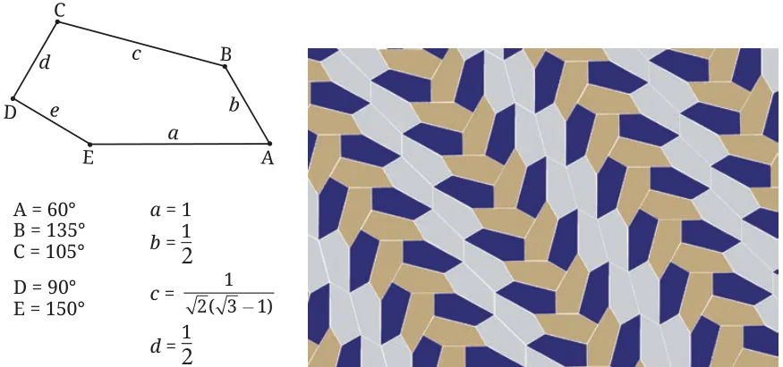

- 1.Justify why the plane cannot be tiled with a regular pentagon. (Hint: Read the first 3 sentences of ‘Think and Reflect’ in the section on tiling.) (There are many ways to tile the plane using a suitable irregular pentagon. The most recent method was found in 2015.)

- 2.Draw a non-convex 4-gon DART. Show how we can tile the plane with copies of DART. Both methods that we discussed earlier will work. Which do you prefer?